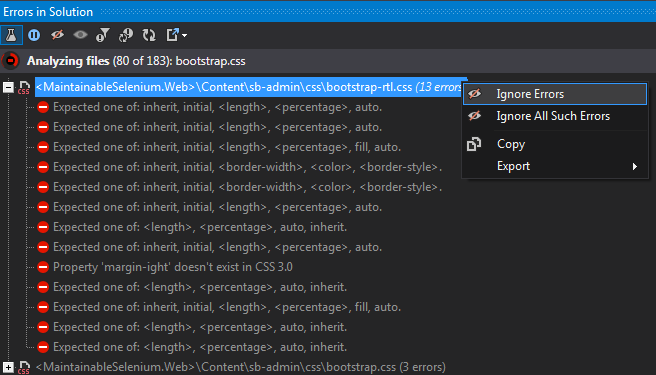
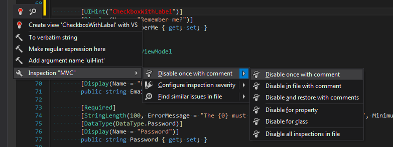
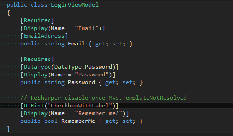

Hunt your bugs in design time
Static analysis is a powerful feature of Visual Studio that helps us to spot syntax and semantic errors in our code. It works very well on currently edited file and runs on the whole solution as one of the compilation stages. But it would be a waste of time to run compilation every time you make changes that affect code outside currently edited file, only to check that you didn’t cause any compilation errors. Luckily, Resharper comes to the rescue with Solution Wide Analysis tool. It tracks all issues in solution in a real time. For example if we change signature of method, it will immediately report all places in code which are not valid anymore. To turn on Solution-wide analysis you have to right click on the circle in the right-bottom corner of the Visual Studio window and from the context menu select “Analyze Errors in Solution”.
Resharper will show a confirmation window with additional information about “Solution-Wide Analysis”.
Next, Resharper will display summary of found errors on the Visual Studio status bar. To get more information about errors you have to open the “Errors in Solution” window.
Keep it green 🔗︎
Not all reported issues are compilation errors but it’s a good practice to keep that window “green” (No errors in solution). I’ve heard other teams saying: “We have this window disabled because it shows so many errors”. And they are pretty damn right. If it shows a ton of errors - it is useless. So if you’re in the same situation I advise you to start by cleaning all the errors, even if it means devoting 1-2 days of your team’s work to this task. After that I guarantee that your development will become more efficient and you will be able to spot bugs in your codebase much faster. It won’t be necessary to compile your application so often during refactoring. However, if you are not able to fix some sort of errors and you can live with that you have a few options to turn off reporting those issues:
- Mark that position as ignored in “Errors in Solution” window (use context menu) 
- Change severity level for that issue (I’ll show you later how to do that)
- Disable single occurrence using Resharper comments  
Unfortunately, static analysis is not a silver bullet and will not guarantee that your software will works without any problems.
How to setup Code Annotations 🔗︎
Resharper comes with a set of additional attributes that allow to extend static analysis and help us to find potential issues in code without a need to compile and run the application. Solution-wide analysis with conjunction of additional annotation in your code could spot potential runtime errors. You can add Resharper Annotations to your project in a few ways:
- The easies one is to install nuget package JetBrains.Annotations (https://www.nuget.org/packages/JetBrains.Annotations/)
- If you don’t like nuget (for some reasons) you can manually add reference to JetBrains.Annotations.dll library which you can find in Resharper installation directory (For me c:\Program Files (x86)\JetBrains\ReSharper\v8.2\Bin\JetBrains.Annotations.dll) (If you are using source control system with your project, you should make a copy of JetBrains.Annotations.dll and add it to your project folder structure).
- You can also add Annotation as a source code. To do that go to “Code Annotations” in Resharper Options and click “Copy C# implementation to clipboard”. After that paste clipboard content into your source code.
However, if you decide to add reference to JetBrains.Annotations.dll you have to deploy it along with your project to the production environment. If it’s a problem for you, there is a nice add-in for Fody witch removes all usages of Annotation attributes from compiled assembly https://github.com/Fody/JetBrainsAnnotations For new version of JetBrains.Annotations.dll (which comes with R# 10) is not necessary because all attributes are marked with [Conditional] attribute (https://msdn.microsoft.com/en-us/library/aa664622(v=vs.71).aspx). That means all usages of Resharper Annotations attributes are erased from metadata by default. You need to remember to change “Copy local” property to false on JetBrains.Annotations.dll though - in order to prevent msbuild from copying this assembly to bin directory.
Code Annotations in action 🔗︎
After you’ve successfully added support for code annotation into your project, you can start decorating your classes and functions with the new attributes. You can find description and sample usages of all attributes in Resharper documentation https://www.jetbrains.com/help/resharper/10.0/Reference__Code_Annotation_Attributes.html Now, let me show you a few example usages of the most useful (in my view) attributes from Code Annotation set.
[Pure] 🔗︎
The PureAttribute is intended to decorate methods which are pure functions (https://en.wikipedia.org/wiki/Pure_function) Thanks to this attribute, every time when you invoke pure function without utilizing returned value, Resharper reports that fact. Using PureAttribute helps you to avoid the following mistake:
I presume that somebody forgot about return keyword in line 25. This code is perfectly fine semantically and it compiles without any errors but definitely won’t work correctly. If you decorate “Calculate” method with PureAttribute, Resharper reports that mistake immediately. (This is not pure academic example- I’ve found similar bug in production code)
[PathReference] 🔗︎
PathReferenceAttribute is intended to decorate function parameter, which accepts string with path to file. It works only in asp.net projects. PathReferenceAttribute gives you two extra things:
- Intellisense with a list of files and directories in given location
- Checking if typed path is pointing to existing file.
PathReferenceAttribute could be helpful when you create helpers which require path to static content, for example video:
[UsedImplicitly] 🔗︎
When we use DI Container or other IOC frameworks, which search for a class in our code based on some conventions, Resharper reports that our class is never used (because there is no explicit reference in code). In order to deal with the problem, we can use UsedImplicityAttribute. You can use it to decorate classes, methods and properties which are used in runtime but there is no direct reference to them inside our code. After that, Resharper stops reporting that issue. Additionally, when we use UsedImplicityAttribute with ImplicitUseKindFlags.InstantiatedNoFixedConstructorSignature on the class, Resharper starts checking usages of constructor parameters and reports issue if there are unused parameters. When the constructor signature is imposed by IOC framework, you should rather use ImplicitUseKindFlags.InstantiatedWithFixedConstructorSignature. If you use that flag, Resharper doesn’t report the fact about unused constructor parameter.
[LocalizationRequired] 🔗︎
This attribute should be helpful when we create application which is (or will be) localized. When we decorate string parameter with that attribute, Resharper starts treating that parameter as localizable string. Every time you type value of that parameter directly in the code, Resharper reports issue. To fix that that, we should move value of that variable to a resource file (simply use “Move to resource” option from Resharper context menu).
[NotNull] and [CanBeNull] (and [ImplicitNotNull]) 🔗︎
These attributes could be useful when you define contracts for your methods. With their help you can define which arguments accept null value and which don’t, as well as if a method can return null value or not. When you use CanBeNullAttribute on parameter, Resharper checks if there is appropriate assertion before accessing members of that parameter. If you use [NotNull], Resharper checks if method doesn’t contain redundant assertions that check for null on that attribute. Similarly, when you use that attribute on method, Resharper checks if there’s necessary assertion on returned value or there’s no redundant assertion (depending on a type of used attribute). By default Resharper treats all arguments and returned values as if they were decorated with [CanBeNull]. You can inverse this behavior by using ImplicitNullability Resharper extension (https://github.com/ulrichb/ImplicitNullability#readme). However, this is not necessary in Resharper 10, as it comes with [ImplicitNotNull] attribute which works the same as the previous extension. We can apply this attribute on class, interface or assembly level.
Sample usages of [NotNull] and [CanBeNull] 🔗︎
[ContractAttribute] 🔗︎
In the set of available attributes there is a very powerful one - ContractAttribute - which allows you to define dependencies between method arguments and returned values (especially useful for assertion methods). Thanks to that you can add additional layer of usage safety and extend Resharper heuristic over your code. You can read more about that on JetBrains Resharper blog http://blog.jetbrains.com/dotnet/2012/08/15/contract-annotations-in-resharper-7/
External Annotations 🔗︎
If you want to add Code Annotations for an existing library (and you don’t have access to source code) you can use mechanism of external annotations. The full instruction how to use it can be found in Resharper documentation https://www.jetbrains.com/resharper/webhelp80/Code_Analysis__External_Annotations.html There is also Resharper extension with a set of annotations for .NET framework and popular libraries. You can install it from Manage Extension window. It’s good to keep that extension up to date.
You can get info about used attributes from Quick documentation window (the shortcut may vary depending on configuration, for me ctr+shif+F1)
Find stack overflow without running program 🔗︎
All that effort you put in decorating your code with annotations will pay off only if you configure correct severity level for described formerly rules. Without that all violation of given rules goes by unnoticed and will not be reported by “Errors in Solution” window. To change inspection severity level, find the place where Resharper reports violation of given rule and from the Resharper context menu (alt+enter) select “Options for ‘(name of the rule)’ inspection” -> “Configure inspection severity”.
Resharper should open “Inspection Options” window where you can select appropriate severity level for selected rule.
Only when you select the highest level (Error) Resharper will start to report all violation of given rule in “Errors in Solution” window. You can also configure desired severity level in “Inspection Severity” section in Resharper options:
To make all that attributes I described before work with “Errors in solution” window you have to setup the following rules on Error level.
Additionally, setting up the following rules to error level will certainly save you a lot of trouble and help to spot mindless code. For example, the first rule will help you to find the places which can cause stack overflow exception.
Summary 🔗︎
Solution wide analysis in conjunction with code annotations is a very powerful tool. But you have to remember that it is not a silver bulled. It won’t make you code bug-less but it will certainly give you a pretty good level of confidence. It makes an error-spot-feedback-loop shorter. A lot of bugs caused by a lack of attention will be reported immediately by Solution Wide Analysis on developing stage without waiting for code review or manual test stage. To makes all that works right you have to also establish some rules in your team. Everybody should remember about the “keep it green” rule and examining the state of the “Errors in solution” window before every check into repository (committing with the “red” state should be forbidden)


{kind=link}
{kind=link}
{kind=link}
{kind=link}
{kind=link}
{kind=link}
{kind=link}
{kind=link}
{kind=link}
{kind=link}
{kind=link}
{kind=link}
{kind=link}
{kind=link}
{kind=link}
{kind=link}
{kind=link}
{kind=link}
{kind=link}
{kind=link}
{kind=link}
{kind=link}
{kind=link}
{kind=link}
{kind=link}
{kind=link}
{kind=link}